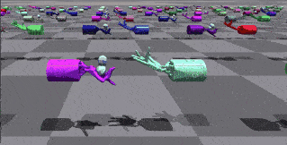

ShadowHandOver：双手传递的实际验收与 PPO 配置

官方仿真演示（动图）此任务可借鉴联合控制与成功事件锁存，但源码成功只检查物体到目标的位置误差。它没有接收手稳定抓握、原手释放或连续停稳验收。以下结论来自固定源码的静态追踪，没有执行上游训练。
任务接口
单个 Actor 联合输出40维动作，两只Shadow Hand各20维。默认 useRelativeControl=False，归一化动作映射到关节位置上下限；移动平均系数1，不额外平滑。Actor与Critic均使用398维完整状态，包括双手关节、指尖状态、力矩、上一动作、物体与目标状态。没有阶段one-hot。源码注释中的422维与实际配置/赋值不一致，以398维实际数组为准。
br_bidex_task；br_bidex_action；br_bidex_obs
物体默认egg，128环境，控制周期1/60秒，75个控制步约1.25秒。随机化配置总开关为False，但reset中的物体位置/转动和关节扰动仍执行，不能把它说成完全固定初态。每回合success清零。
br_bidex_env_cfg；br_bidex_sim；br_bidex_reset
奖励与成功
令 d=||p_goal-p_obj||，θ=2 asin(min(||quat_diff.xyz||,1))。实际每步奖励为：
r = exp(-0.2*(50*d+θ)) + 250*I(goal_resets==1)
落下项权重为0。goal_resets在d<=0时置1，success则在d<0.03m时锁存。两者阈值不同，不能把+250解释为每次3cm成功都会获得。源码虽计算sum(actions²)，却没有加入reward；配置中的actionPenaltyScale=-0.0002并不生效。rotRewardScale与rotEps同样不参与该表达式。
br_bidex_reward；br_bidex_env_cfg
默认终止是物体高度≤0.2m或步数达到75。maxConsecutiveSuccesses=0使额外成功终止分支关闭；达到成功阈值后仍可继续运行。成功逻辑无接收手接触约束，这只证明瞬时位置到达，无法证明完成稳定传递。wrapper原样转发reward，没有乘控制dt。
br_bidex_reward；br_bidex_wrapper
可复现配置
入口（静态解析，未执行）：
cd bidexhands
python train.py --task=ShadowHandOver --algo=ppo --seed=42 --headless
retrieve_cfg将任务映射到cfg/ShadowHandOver.yaml与cfg/ppo/config.yaml，再由PPO构造函数补默认值。默认seed=-1随机选择；上面的命令显式覆盖为42。默认预算的算术结果为128×8×6500=6,656,000个rollout环境步，不计初始化reset内的一次动作。
br_bidex_mapping；br_bidex_ppo_cfg；br_bidex_run
| 项 | 有效配置 |
|---|---|
| 并行环境 / rollout / 迭代 | 128 / 8 / 6500 |
| 每次rollout样本 / minibatch / epochs | 1024 / 256 / 5 |
| Actor、Critic | 独立MLP，1024,1024,512，ELU；相同398维状态 |
| 学习率 | 3e-4，KL自适应，desired_kl=.016 |
| gamma / GAE lambda | .96 / .95 |
| PPO clip / entropy | .2 / 0 |
| value loss / clipped value loss | 系数2 / False |
| max grad norm | 1 |
| 观测 / 动作裁剪 | ±5 / ±1 |
| 配置init_noise_std | .8；实现将.8²=.64作为Gaussian的scale_tril对角，实际初始化标准差为.64 |
br_bidex_ppo_cfg；br_bidex_ppo_runtime；br_bidex_network；br_bidex_storage
没有检索到与此精确默认命令配套的保存日志、独立评估种子与耗时，不能由配置推导成功率。RSL-RL、SB3或其他库的同名噪声参数也不能直接按数值互换。
复用判断
可以复用每环境独立success锁存，以及同一Actor对双手的联合动作接口。若未来需要稳定交接，应增加物体接触归属、原手释放与连续稳定验收，并单独登记任务版本。对于本地按钮任务，保留已有独立验收；不能将3cm瞬时到达率换成完整成功率。
这次源码追踪增加了有效配置与实际reward不一致的反例，支持先追踪执行路径再抄参数。它不提供当前FSM按钮方案的优劣结论。